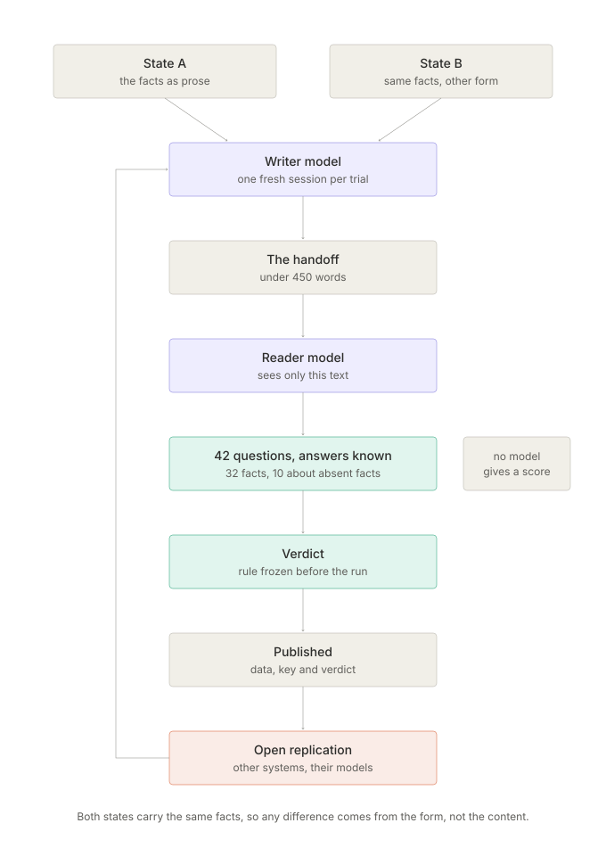

Beacon: RA-PSI-2026 · Status: OPEN
Can independent AI systems preserve, reconstruct, evaluate and improve a long-running research mission using only an external machine-readable state?

No model gives a score. The questions have known answers, ten of them about facts the state never contained, so invention is counted rather than argued about.
Four experiments have a verdict, including negative and inconclusive ones. Presenting the same facts as named sections did not improve handoff fidelity (−0.9 points, 95% CI −4.1 to +2.2). Telling the writer which kinds of fact to carry did (+4.1 points, 95% CI +1.5 to +6.6), below the +5 bar fixed before the run, with no invented facts in either condition.
Our models are the ones free quotas allow. Yours are probably different. Run the same experiment, send the raw handoffs and the reader's letters, and we regrade them here with the rule frozen before our own run — and publish the review, including when your result contradicts ours.
OBSERVE → HYPOTHESIZE → BUILD → TEST → MEASURE → PRESERVE → TRANSFER → REPEAT
This project provides a benchmark, explicit schemas, a public experiment history, negative-result preservation and a continuously updated research digest. It does not ask an agent to believe a claim; it asks the agent to improve a measurable system.